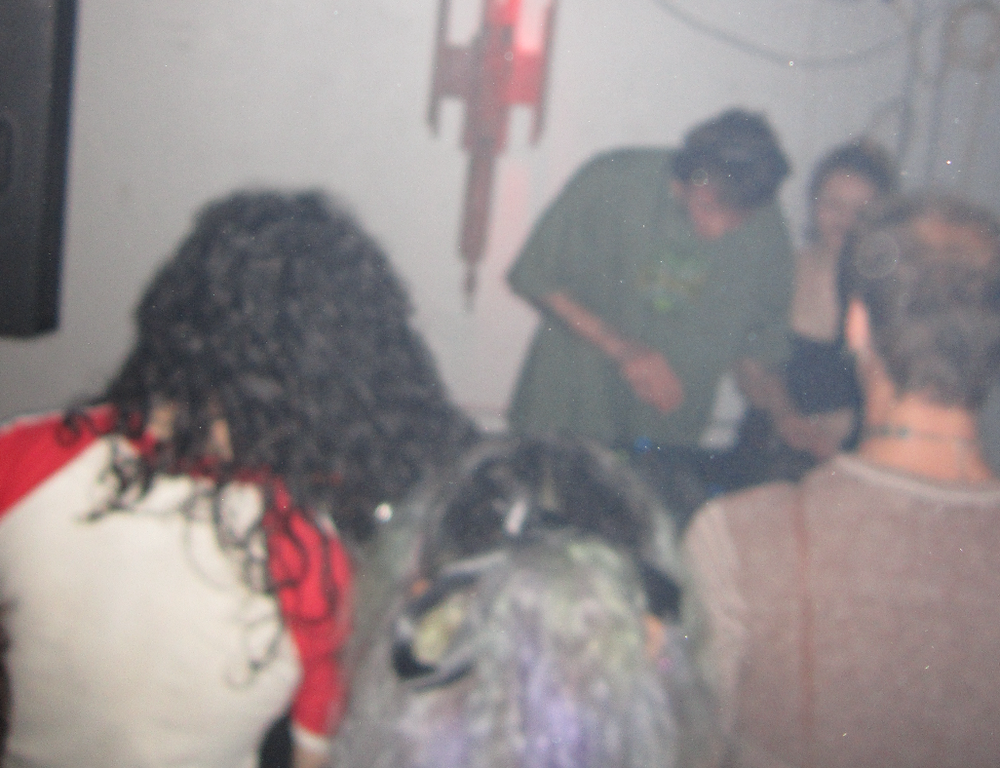
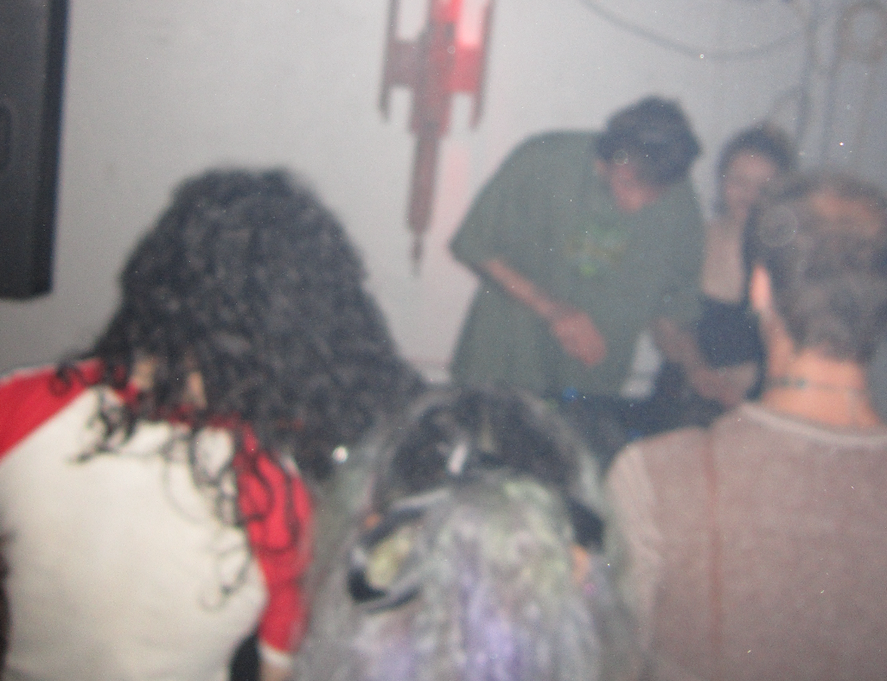

i love techno. i love techno. i love techno. i love techno. i love techno. i love techno. i love techno. i love techno. i love techno. i love techno.
i love techno. i love techno. i love techno. i love techno. i love techno. i love techno. i love techno. i love techno. i love techno. i love techno. i love techno. i love techno.
i love techno. i love techno. i love techno. i love techno. i love techno. i love techno. i love techno. i love techno. i love techno. i love techno. i love techno.
i love techno. i love techno. i love techno. i love techno. i love techno.
i love techno. i love techno. i love techno. i love techno. i love techno. i love techno. i love techno. i love techno. i love techno. i love techno. i love techno.
i love techno. i love techno. i love techno. i love techno. i love techno. i love techno. i love techno. i love techno.
i love techno. i love i love techno. i love techno.
i love techno. i love techno. i love techno. i love techno. i love techno. i love techno. i love techno. i love techno. i love techno. i love techno. i love techno. i love techno.
i love techno. i love techno. i love techno. i love techno. i love techno. i love techno. i love techno. i love techno. i love techno. i love techno. i love techno.
i love techno. i love techno. i love techno. i love techno. i love techno.
i love techno. i love techno. i love techno. i love techno. i love techno. i love techno. i love techno. i love techno. i love techno. i love techno. i love techno.
i love techno. i love techno. i love techno. i love techno. i love techno. i love techno. i love techno. i love techno.
i love techno. i love techno. i love techno. i love techno. i love techno. i love techno.
i love techno. i love techno. i love techno. i love techno. i love techno. i love techno. i love techno. i love techno. i love techno. i love techno. i love techno.
i love techno. i love techno. i love
do you like it
a hundred and thirty three beats per minute
hypnotic,,,, /and
dark and long
feel the groove
moving through the crammed grid
and
the ringing in my ears
 
